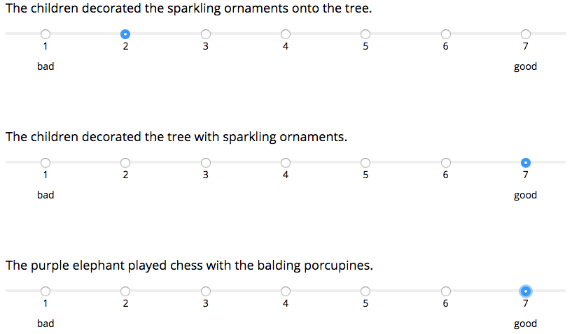
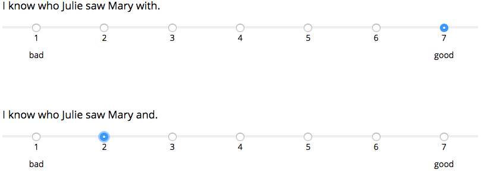

<!doctype html>
<html>
  <head>
    <script src="https://ajax.googleapis.com/ajax/libs/jquery/1.11.1/jquery.min.js"></script> 
    <script src="jspsych-5.0.3/jspsych.js"></script> 
    <script src="jspsych-5.0.3/plugins/jspsych-text.js"></script>
    <script src="jspsych-5.0.3/plugins/jspsych-survey-text.js"></script>
    <script src="jspsych-5.0.3/plugins/jspsych-single-stim.js"></script> 
    <script src="jspsych-5.0.3/plugins/jspsych-survey-likert.js"></script>
    <script src="jspsych-5.0.3/plugins/jspsych-instructions.js"></script>
    <script src="FileSaver.js-master/FileSaver.js"></script>  
    <script src="illusionlists_randomized.js"></script>
    <script src="fillers.js"></script>
    <link rel="stylesheet" href="jspsych-5.0.3/css/jspsych.css"></link>
    <!--<link rel="stylesheet" href="css/jquery-ui.css"></link>-->
  </head>
  <body>
    <div id="jspsych-target"></div>
  </body>
  <script>
    var mturk = false

    //These 8 lists are loaded from the illusionlists_randomized.js file
    lists = [list1, list2, list3, list4, list5, list6, list7, list8];
    
    itemlist = jsPsych.randomization.sample(lists, 1, false)[0];

    if(itemlist == list1){
      jsPsych.data.addProperties({list: 1});
    } else if(itemlist == list2){
      jsPsych.data.addProperties({list: 2});
    } else if(itemlist == list3){
      jsPsych.data.addProperties({list: 3});
    } else if(itemlist == list4){
      jsPsych.data.addProperties({list: 4});
    } else if(itemlist == list5){
      jsPsych.data.addProperties({list: 5});
    } else if(itemlist == list6){
      jsPsych.data.addProperties({list: 6});
    } else if(itemlist == list7){
      jsPsych.data.addProperties({list: 7});
    } else if(itemlist == list8){
      jsPsych.data.addProperties({list: 8});
    }

    var trial_list = [];
    //For every item in the items list, add a dictionary with its type and value to the list of trials
    for(var x=0; x<itemlist.length;x++){
      d = {"type": "item", "value": itemlist[x]};
      trial_list.push(d)
    }
    //For every filler from the fillers.js file, add a dictionary with its type and value to the list of trials
    for(var x=0; x<fillers.length;x++){
      d = {"type": "filler", "value": fillers[x]}
      trial_list.push(d)
    }
    //shuffle all the items and fillers into a randomized list of trials
    trial_list = jsPsych.randomization.shuffle(trial_list);

    var instructions_block = {
      type: 'instructions',
      pages: [
        "<p style='font-size:30px; text-align:center'>Welcome to the experiment!</p><p>In this experiment, you will read many sentences. For each sentence, please rate the sentence based on whether you think it is an acceptable sentence (6 or 7) or an impossible/unacceptable sentence (1 or 2). Some sentences may not sound completely impossible, while also not being completely acceptable -- in these cases, use the more intermediate ratings (3-5).</p><p>Note, however, that you are not being asked to judge whether the sentence is plausible or not (i.e. it would require 'too strange' a context to make the sentence plausible); rather, you are only being asked to judge whether the sentence sounds like possible English or not. For example, (a) below describes a likely scenario, but most English speakers find it unacceptable (in contrast to (b)). Sentence (c) describes an unlikely scenario, yet given the proper situation, you could write/speak (c) without any problem.</p><div class='center-content'></img>",
        "<p>You are also not being asked to judge whether the sentence is acceptable according to grammatical rules you may have learned in school -- only whether the sentence sounds natural and good. For example, people often say that it's 'bad' to end a sentence with a preposition like 'with', however most English speakers find (d) below to be a perfectly fine sentence (in contrast to (e)).</p><div class='center-content'></img><p>As you work through the sentences on the following pages, please keep in mind that each sentence is different, and you may feel very differently towards two sentences which at first seem superficially similar. In that respect, judge each sentence individually, and not in comparison with other sentences you have read. Also, please do not circle the words at the ends of the scale, these are simply to remind you of the scale's orientation.</p><p>If you have any questions, please ask the experimenter now.</p><p style='font-size:30px; text-align:center'>Ready? Click <strong>next</strong> to begin.</p>"
      ],
      show_clickable_nav: true
    };

    var experiment = [];
    experiment.push(instructions_block);


    // defining two different response scales that can be used.
    var scale = ["1<p>bad</p>", "2", "3", "4", "5", "6", "7<p>good</p>"];

    for(var x=0; x<trial_list.length;x++){
      var type = trial_list[x]["type"]
      var trial = trial_list[x]["value"];

      if(type == "item"){
        var likert_block = {
          type: 'survey-likert',
          questions: [trial["Sentence"]],
          labels: [scale], // need one scale for every question on a page
          required: true,
          data: { TrialNumber: x+1, Type: type, item: trial["ITEM"], cond: trial["COND"], repeatability: trial["event"], IlluBare: trial["ILLU/BARE"], quantifier: trial["MORE/FEW"], ellipsis: trial["ELLIP/NON"], additive: trial["additive"], Sentence: trial["Sentence"]},
          on_finish: function() {
                        var t = jsPsych.data.getLastTrialData();
                        var r = t.responses;
                        //alert(r[7])
                        jsPsych.data.addDataToLastTrial({Response: Number(r[7])+1});
                }

        };
      } else {
          var likert_block = {
            type: 'survey-likert',
            questions: [trial["fill-sentence"]],
            labels: [scale], // need one scale for every question on a page
            required: true,
            data: { TrialNumber: x+1, Type: type, Fill1: trial["fill1"], Fill2: trial["fill2"], Sentence: trial["fill-sentence"]},
            on_finish: function() {
                          var t = jsPsych.data.getLastTrialData();
                          var r = t.responses;
                          //alert(r[7])
                          jsPsych.data.addDataToLastTrial({Response: Number(r[7])+1});
                  }

          };
      }
      
      experiment.push(likert_block);
    }

    function makeid(){
        var text = "";
        var possible = "ABCDEFGHIJKLMNOPQRSTUVWXYZabcdefghijklmnopqrstuvwxyz0123456789";

        for( var i=0; i < 5; i++ )
            text += possible.charAt(Math.floor(Math.random() * possible.length));

        return text;
    }

    function subjcheck(subj){
        if(subj[0] != "s"){
            subj = "s" + subj;
        }
        nums = ["1", "2", "3", "4", "5", "6", "7", "8", "9", "0"]
        for(i = 1; i < subj.length; i++) {
            if(!(nums.indexOf(subj[i]) > -1)) {
                nsubj = prompt("Subject ID must consist of an s followed by only numbers. Please enter a valid subject ID:", "s999");
                return subjcheck(nsubj);
            }
        }
        return subj;

    }

    function saveData(filename, filedata){
       $.ajax({
          type:'post',
          cache: false,
          url: 'save_data.php', // this is the path to the above PHP script
          data: {filename: filename, filedata: filedata}
       });
    }


    if(mturk){
        var code = makeid();
        jsPsych.data.addProperties({subject: code});
        
        /* define debrief block */
        var debrief_block = {
            type: "text",
            text: "<p>Please enter the code below on Mechanical Turk to complete the HIT. </p>" + 
                "<p style='font-size: 20px;'><strong>Note: You must copy the code before leaving this screen!</strong></p>" +
                "<p style='font-size: 30px;'>" + code + "</p>" + 
                "<p>Thank you for participating!</p>" +
                "<p>Press spacebar to conclude this experiment.</p>",
            cont_key: ['space']
        };
              
        /* define survey block */
        var survey_block = {
            type: 'survey-text',
            preamble: "<p>That's it! Before we present the code, please consider answering these optional questions about your experience in this study:</p>",
            questions: ["Did you find the experiment challenging? Why or why not?", "Did any particular type of sentence jump out at you?", "Anything else you'd like to tell us?"]
        };

        var submit_block = {
            type: 'single-stim',
            stimuli: [" "],
            choices: ['none'],
            timing_response: .001,
            timing_post_trial: 0,
            on_finish: function() {
                saveData(code + ".csv", jsPsych.data.dataAsCSV());
                //alert(turk.previewMode)
                //alert(turk.hitID)
                //turk.submit(jsPsych.data.getData())
            }
        }
        experiment.push(survey_block);
        experiment.push(submit_block);
        experiment.push(debrief_block); 

    } else{
        /* define debrief block */
        var finish_block = {
            type: "text",
            text: "<p>Thank you for participating!</p>",
            cont_key: ['1']
        };
              
        /* define survey block */
        var survey_block = {
            type: 'survey-text',
            preamble: "<p>That's it! Before we present the code, please consider answering these optional questions about your experience in this study:</p>",
            questions: ["Did you find the experiment challenging? Why or why not?", "What can you tell us about when you would say that the sentence <strong>did</strong> match the picture?", "Anything else you'd like to tell us?"]
        };

        experiment.push(survey_block);
        experiment.push(finish_block); 

    }

    if(!mturk){
        var subj = prompt("Please enter Subject ID", "s999");
        subj = subjcheck(subj);
        jsPsych.data.addProperties({subject: subj});
    }
    jsPsych.init({
      display_element: $('#jspsych-target'),
      timeline: experiment,
      on_finish: function() {
                  //jsPsych.data.displayData('csv');
                  if(!mturk){
                  var dat = jsPsych.data.dataAsCSV();
                  var blob = new Blob([dat], {type: "text/plain;charset=utf-8"});
                  saveAs(blob, subj + ".csv");
                  }
                }
    });


  </script>
</html>
